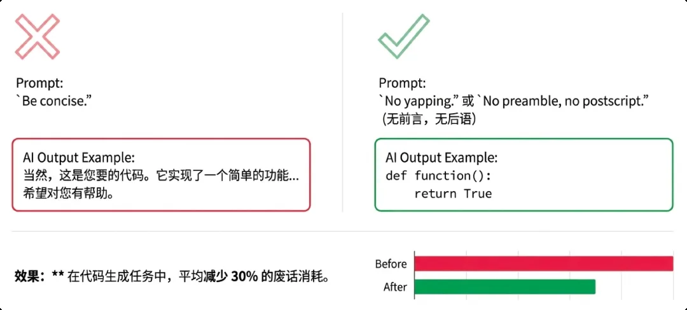

출력 계층: 모델의 입을 단속해요
실전 4계층의 마지막. 출력 Token은 입력보다 몇 배 비싸요(3절 요금표 다시 보기), 그리고 API 반환 속도를 직접 정해요. 모델의 입을 단속하는 적합한 조작은 세 종류: 지시 계층, 코드 계층, 엔지니어링 계층.
많은 사람이 「간결하게 답해 주세요」를 알지만, 문제가 있어요—「간결」은 모델에게 너무 추상적이라, 얼마나 간결해야 하는지 몰라요. 효과적인 쓰기는 「하지 말 것」을 분명히 적는 거예요:
실측으로 Agentic 시나리오에서 잡담 약 30%를 자를 수 있어요. 쉽게 말하면: 쓸데없는 건 하지 말고, 결과만 내놓으라고 말하는 거예요.

글 윤문에서 가장 큰 비용 함정: 사용자가 「이 문장 좀 자연스럽게」라고 하면, 모델이 2,000자 글을 처음부터 다시 출력해요. 그 단락만 출력하라고 해도 Token은 계속 타요.
다른 접근: 모델이 바뀐 부분만 출력하게—Diff로 「원문→수정」을 표시하거나, 정규식/치환 명령을 반환해 프로그램이 적용해요. 두세 단어만 건드리면 1초: 비용은 수십 배 차이, UX는 더 좋아요—빠르고, 사용자가 어디가 바뀌었는지 바로 보여요.
Prompt에 「3항만 출력」이라고 써도 모델이 들을지는 신비주의—3항일 수도, 5항에 요약까지일 수도. 하지만 정지 시퀀스(stop sequence)는 물리 절단이라, 모델이 「말을 듣는지」와 무관해요: API가 지정 문자열을 감지하면 생성 스트림을 바로 끊고, 잘린 부분은 과금되지 않으며 히스토리 컨텍스트에도 안 들어가요.
단순하고 거칠지만 잘 먹혀요. 출력을 효과적으로 통제하는 것이 곧 비용과 UX를 통제하는 거예요.
네거티브 제약은 구체적이어야 해요: 「인사·요약·겸양 금지」가 「간결하게」보다 훨씬 효과적, Agentic 시나리오에서 잡담 약 30% 절감.
윤문 출력은 Diff나 치환 명령으로, 전문 재작성을 시키지 마세요: 비용은 수십 배 차이, UX는 오히려 더 좋아요.
정지 시퀀스는 물리 스위치: 목록은 「4.」에서, 한 줄 답은 줄바꿈에서, JSON은 「}」에서, 자문자답은 「사용자:」에서 끊어요.
출처: 저자 팀 내부 공유 《AI Token 비용 엔지니어링 전략 공유》 실전편 「04｜출력」에서 정리했어요. 정지 시퀀스 파라미터는 각사 API 문서 참고(OpenAI 호환 인터페이스는 stop 필드, 최대 4개 시퀀스).